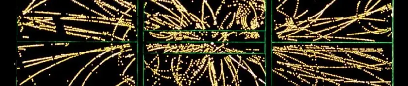

Articles ·
Theorists with a Swamp, not a Theory

In recent weeks string theory has been again getting a lot of press attention, because of claims that new progress is being made in the study of the relation of string theory and the real world, via the study of the “swampland”. This is a very old story, and I’ve often written about it here. I just added a new category, so anyone who wants to can go follow it by clicking on the Swampland category of posts.
Recent press coverage of this includes an article by Clara Moskowitz at Scientific American, entitled String Theory May Create Far Fewer Universes Than Thought. This motivated Avi Loeb to write his own Scientific American piece highlighting the dangers of string theory speculation unmoored to any possible experimental test, which appeared as Theoretical Physics is Pointless without Experimental Tests. Loeb reports:
There is a funny anecdote related to the content of this commentary. In my concluding remarks at the BHI conference we held at Harvard in May 2018, I recommended boarding a futuristic spacecraft directed at the nearest black hole to experimentally test the validity of string theory near the singularity. Nima Arkani-Hamed commented that he suspects I have an ulterior motive for sending string theorists into a black hole. For the video of this exchange, see
Last week Natalie Wolchover reported on this controversy, with an article that appeared at Quanta magazine as Dark Energy May Be Incompatible With String Theory and at the Atlantic as The Universe as We Understand It May Be Impossible (the Atlantic headline writer misidentifies “we” as “string theorists”).
Wolchover accurately explains part of this story as a conflict between string theorists over whether certain solutions (such as the KKLT solution and the rest of the so-called “string theory landscape”) to string theory really exist. Vafa argues they may not exist, since the proposed solutions are complicated and “Usually in physics, we have simple examples of general phenomena.” In response Eva Silverstein argues:
They [Vafa and others] essentially just speculate that those things don’t exist, citing very limited and in some cases highly dubious analyses.
On Twitter, Jim Baggott explains the problem
Let’s be clear. This is not a ‘test’ of string theory. There is no ‘evidence’ here. This is yet another conjecture that ‘might be true’, on which there is no consensus in the string theory community.
and in a retweet, Will Kinney accurately notes that
The landscape is a conjecture. The “swampland” is a conjecture built on a conjecture.
and points to an earlier tweet thread of his about this. Sabine Hossenfelder replies with the comment that
The landscape itself is already a conjecture build on a conjecture, the latter being strings to begin with. So: conjecture strings, then conjecture the landscape (so you don’t have to admit the theory isn’t unique), then conjecture the swampland because it’s still not working.
The Simons Center summer workshop this year has been devoted to Recent Developments in the Swampland, videos are here (this was also the case in 2006, see here). Next month in Madrid a conference will be devoted to Vistas over the Swampland, and I’m sure many more such gatherings are planned.
Unfortunately I think the fundamental problem here somehow never gets clearly explained: String theorists don’t actually have a theory, what they have is an approximation to an unknown theory supposed to be valid in certain limits, and a list of properties they would like the unknown theory to have. If this is all you have, there’s no way to distinguish when you’re on dry land (a solution to string theory) from when you’re in the swamp (a non-solution to string theory). Different string theorists can generate different opinions, conjectures and speculations about whether some location is swamp or dry land, but in the absence of an actual theory, no one can tell who is right and who is wrong. I don’t know why Vafa back in 2005 chose “Swampland” as the metaphor for this subject, but it’s an unfortunately apt one: string theorists are stuck in a swamp, with no way of getting out since they can’t tell what’s dry land and what isn’t.
15 Responses to Theorists with a Swamp, not a Theory
-
4gravitons says:
August 14, 2018 at 3:27 am
I’m not an expert in string compactifications, but for what it’s worth I don’t think the problem here is that the theory itself is ambiguous. Nonperturbative physics is hard, especially for gravity. Even with a completely well-defined theory (say, 11D supergravity), it’s not straightforward to verify that some arbitrarily complicated compactified quantum spacetime is a valid solution to the full theory.
(Case in point: asymptotic safety is still an open question, and that starts out in 4D.)
There’s a case to be made that if someone doesn’t have a good handle on the nonperturbative physics, they shouldn’t act like they’re doing cosmology with it. But I don’t think the problem is just that M theory doesn’t have a Lagrangian.
-
Lars says:
August 14, 2018 at 7:10 am
“It’s conjectures all the way down”
Conjecture built on guess
In turn that’s built on hunch
The latter really rests
On inference a bunch -
Peter Woit says:
August 14, 2018 at 8:40 am
4gravitons,
Presumably you agree that there is a problem with a lack definition of non-perturbative string theory. Why are you so sure that this problem isn’t relevant to the problem here? I’d recommend reading the introduction to arXiv:1807.06581 (written by people who are experts on this), which explains the underlying problem behind the dense thicket of technicalities which arise here:
Compactifcations of superstring or M-theory to 4d Minkowski or AdS space are well understood and have led to the idea that string theory gives rise to a gigantic landscape of possible 4d low energy eective theories [2{11]. However, classical no-go theorems such as [12] indicate that realizing de Sitter vacua in string theory requires quantum and/or stringy ingredients. The fact that corrections to classical 10d low energy supergravity are qualitatively important implies that dS compactifcations, in contrast to AdS or Minkowski compactifcations, must live in a regime in which these corrections cannot be made arbitrarily small [13], hence perturbation theory cannot be made arbitrarily accurate. Moreover the absence of supersymmetry in dS, and perhaps more fundamentally the lack of a complete, nonperturbative formulation of string theory, make it hard to obtain exact results beyond perturbation theory. Thus a completely rigorous, parametrically controlled construction of individual de Sitter vacua in string theory has remained out of reach. On the other hand, starting with [6], much progress has been made over the past 15 years in developing models containing all the ingredients needed to produce effective potentials generic enough to support an abundance of dS vacua, barring extraordinary conspiracies that would somehow eliminate all of those.
-
JGS says:
August 14, 2018 at 9:35 am
It’s funny that the Atlantic article, which is a reprint of Natalie Wolchover’s Quanta piece, says that string “theory permits some 10,500 different solutions: a vast, varied “landscape” of possible universes.” Some typo!
-
4gravitons says:
August 14, 2018 at 12:46 pm
Peter,
I agree that the lack of a full non-perturbative definition of the theory is often brought up in this context, it’s just not obvious to me that it isn’t a red herring, something that gets emphasized because it’s a big deep problem that’s plausibly related and thus makes for good introduction-padding material. Put another way, I know of very few cases where having a non-perturbative definition alone actually helps answer the kind of question these people are trying to answer, without some extra magic like unbroken supersymmetry. But again, I may just be showing my ignorance here.
-
Paraphraser says:
August 14, 2018 at 1:26 pm
Classical no-go theorems indicate that realizing confinement in Yang-Mills theory requires quantum ingredients. The fact that corrections to classical 4d low energy chromodynamics are qualitatively important implies that confinement must live in a regime in which these corrections cannot be made arbitrarily small, hence perturbation theory cannot be made arbitrarily accurate. Moreover the lack of a complete, nonperturbative formulation of Lorentz-invariant Yang-Mills theory make it hard to obtain exact results beyond perturbation theory. Thus a completely rigorous, parametrically controlled construction of hadron states in Yang-Mills theory has remained out of reach.
-
Peter Woit says:
August 14, 2018 at 2:01 pm
4gravitons,
It sounds like you don’t actually understand the technical issues here, but somehow are convinced that it’s a good idea to suggest that Denef/Henecker/Wrase (who are experts on this) are padding their introduction with misleading red-herring material. Sorry, but this is pretty bizarre behavior.
I’ve ended up wasting huge amounts of time the past fifteen years arguing about the KKLT construction with people. Besides a very small number of cases, the people who have wanted to argue about it with me don’t seem to actually understand any details of what the issues are. One of the weirder general aspects of the “string theory” story over the years is the way it is so difficult to get a concrete actual definition of things that people are making claims about. What exactly is a “solution to string theory”, and why are experts now disagreeing over what is and what isn’t such a solution? If you think Denef/Henecker/Wrase are spouting nonsense, can you point to somewhere where someone gives a precise answer to this question that isn’t nonsense?
-
Peter Woit says:
August 14, 2018 at 2:11 pm
paraphraser,As you’re undoubtedly well-aware, there is a complete non-perturbative formulation of Yang-Mills theory (lattice gauge theory), expected to be Lorentz-invariant in the continuum limit, with massive amounts of numerical data backing up that expectation. Trying to claim that the state of Yang-Mills theory and that of non-perturbative string theory are the same is just absurd.
-
4gravitons says:
August 15, 2018 at 3:41 am
In retrospect I think I was confusing the naive notion of defining a theory (having the Lagrangian, etc.) with the more sophisticated requirements (having something like lattice gauge theory) that you/Denef/Henecker/Wrase have in mind, so sorry for muddling things. Agreed that in the absence of that kind of definition the criteria for what is and isn’t a solution seem quite vague, I’ve likewise been frustrated by the lack of explicit statements of what these people would count as a sufficiently established solution.
-
mrp says:
August 15, 2018 at 7:50 am
As a non-expert, it is not clear to me from the media coverage whether the conjecture put forth by Vafa and others is a mathematical conjecture or an empirical conjecture. Can anyone clear this up for me?
-
Peter Woit says:
August 15, 2018 at 8:58 am
mrp,
It’s not an empirical conjecture. It is often promoted as a well-defined mathematical conjecture: the solutions of the string theory equations have (or do not have) certain properties.The problem is that you don’t know what the relevant string theory equations are. So, this is a conjecture about a conjecture:
First conjecture: There is a well-defined theory satisfying a certain list of properties.
Second conjecture: The equations of this unknown theory do or don’t have certain specific properties.
The second conjecture is a “mathematical conjecture”, but I’m not so sure the first one deserves to be called that.
-
Anonymous says:
August 15, 2018 at 6:06 pm
I would like to point out that the notion of “swampland” is independent of string theory.
The swampland is defined as the collection of low energy effective field theories which include perturbative gravity but does not admit a non-perturbative completion.
Finding criteria to decide if a low energy theory belong to the swampland is
of rather obvious interest.Conjecturing such criteria on the basis of our current knowledge of string theory and holography is of course a more hazardous enterprise, as we only have a solid non-perturbative understanding of certain supersymmetric, Anti de Sitter backgrounds
but we are interested in non-supersymmetric, possibly de Sitter backgrounds.Nevertheless, well-posed conjectural criteria are a reasonable subject of inquiry
and once formulated they are independent of the validity of string theory or landscape ideas.It seems inappropriate to characterize that work as “conjecture built on a conjecture
built on a conjecture”. -
Peter Woit says:
August 15, 2018 at 6:58 pm
Anonymous,
One aspect of the swampiness problem here is that it’s often unclear what definition of “swampland” is being used. According to you the definition makes no reference to string theory, according to others it does. For instance, Wikipedia tells us that:“In physics, the term swampland is used in contrast to the term “landscape” to indicate physical theories or aspects of such theories that could be true if gravity were not an issue but are not compatible with string theory.”
I’m using the term in this sense (EFT incompatible with string theory) and pointing out the problem with this definition (you don’t know what equations the words “string theory” are referring to). The recent “swampland” controversy has centered around the question of whether string-theory based constructions like KKLT are true metastable string theory ground states, this is a controversy about string theory.
When you instead use the definition “EFT incompatible with non-perturbative quantum gravity”, you need to explicitly state your assumptions/conjectures about what properties quantum gravity will have non-perturbatively. Some people believe string theory is the only consistent non-perturbative QG, so, for them, there’s no difference in the two definitions. If there’s a difference for you, you need to explicitly state your assumptions.
In the case of the current controversy, there’s good observational evidence for de Sitter, and no evidence for “quintessence” + lots of reasons to be skeptical about it. So, if you believe Vafa’s conjecture and your swampland is the string theory one, you have good evidence against string theory (but, due to swampiness, not evidence string theorists will accept). If you believe Vafa’s conjecture and your swampland is the non-perturbative QG one, then you have evidence there is no non-perturbative QG. I’d argue that in this second case you haven’t shown there is no non-perturbative QG (since I think there’s a consistent theory of the world, including QG), you’ve just shown that there’s a problem with your conjectured properties of non-perturbative QG. An added reason why one wants to be clear exactly what properties are being conjectured.
-
Moyses says:
August 16, 2018 at 2:23 pm
Dear Peter,
as you seems to have former publications in LQCD, I assume that you do not ignore IKKT results derived by similar Monte Carlo methods. Clearly, such matrix approach to ST provides a nonperturbative fully-covariant formulation for IIB ST. Surprisingly enough, not only numerical solutions (but also analytical ones) suggest the same results, i.e.: an expanding (3+1)d Universe dynamically emerges together with a cosmological “constant”. Please, check for instance: arXiv:1208.0711 and references therein.
All the best,
M. -
Peter Woit says:
August 16, 2018 at 2:53 pm
Moyses,
http://www.math.columbia.edu/~woit/wordpress/?p=4320
Migrated from the AUASS website archive as published, with the formatting tidied.